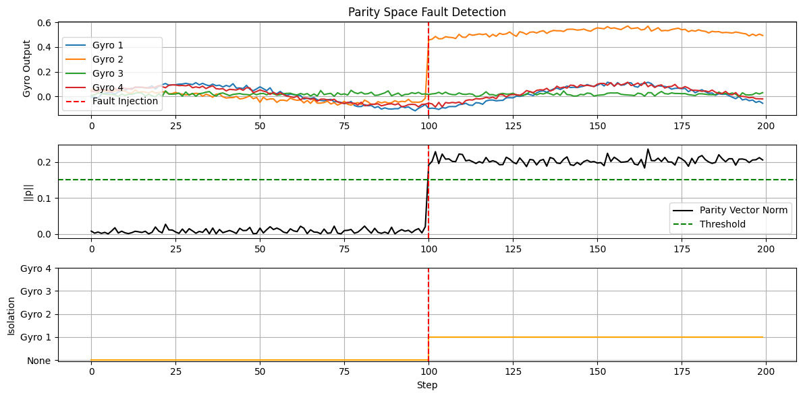
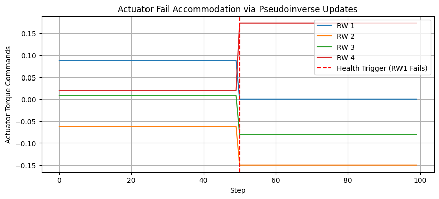
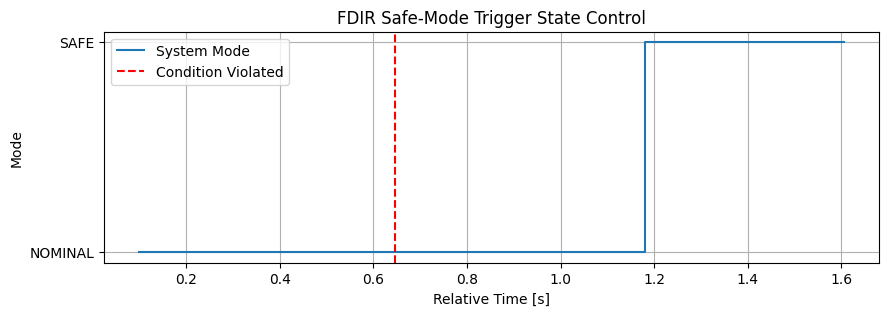

Tutorial 16: Fault Detection, Isolation, and Recovery (FDIR)
This tutorial covers FDIR techniques for spacecraft systems. FDIR is critical for autonomy and survival, ensuring the spacecraft can detect failures in sensors or actuators and respond appropriately (e.g., by re-allocating controls or triggering a Safe Mode).
1. Theory Prerequisite
1.1 Residual Generation
A residual is a signal that is zero (or small) in normal operation and non-zero during a fault.
Analytical Redundancy: Comparing outputs of two different sensors/models that relate algebraically.
Observer Residuals: Using an estimator (like a Luenberger Observer) to predict the output \(\hat{y}\). Residual \(r = y - \hat{y}\).
1.2 Parity Space
For redundant sensors (e.g., 4 gyros for 3 axes):
Parity Vector: \(p_{vec} = P y\)
Detection: \(\|p_{vec}\| > \text{threshold}\)
Isolation: The column of \(P\) that aligns best with \(p_{vec}\) identifies the faulty sensor.
1.3 Actuator Accommodation
Control allocation: \(\tau = B u\). We find \(u\) to minimize \(u^T W u\):
import numpy as np
import matplotlib.pyplot as plt
import time
from gnc_toolkit.fdir.parity_space import ParitySpaceDetector
from gnc_toolkit.fdir.failure_accommodation import ActuatorAccommodation
from gnc_toolkit.fdir.safe_mode import SafeModeLogic, SafeModeCondition, SystemMode
print("Imports successful.")
Imports successful.
2. Demonstration: Sensor Fault Isolation (Parity Space)
We simulate 4 gyros aligned on a tetrahedral structure tracking a 3D rate vector. Around step 100, Gyro 2 develops a bias fault (sticks/off-by-one).
# Geometry Matrix for 4 Gyros (Rows = Gyro axes in Body Frame)
M = np.array([
[1.0, 0.0, 0.0], # Gyro 1 on X
[0.0, 1.0, 0.0], # Gyro 2 on Y
[0.0, 0.0, 1.0], # Gyro 3 on Z
[0.577, 0.577, 0.577] # Gyro 4 skewed
])
detector = ParitySpaceDetector(M)
steps = 200
dt = 0.1
threshold = 0.15
history_pvec_norm = []
history_isolated = []
history_y = []
for k in range(steps):
# 1. True Rate (sine wave for dynamics)
true_rate = np.array([0.1*np.sin(0.05*k), 0.05*np.cos(0.04*k), 0.02])
# 2. Measurement without fault
noise = np.random.normal(0, 0.01, size=4)
y = M @ true_rate + noise
# 3. Inject Fault at k >= 100 on Gyro 2 (index 1)
if k >= 100:
y[1] += 0.5 # Add step bias
# 4. Parity Space detection
p_vec = detector.get_parity_vector(y)
p_norm = np.linalg.norm(p_vec)
isolated_idx = -1
if detector.detect_fault(y, threshold):
isolated_idx = detector.isolate_fault(y)
history_pvec_norm.append(p_norm)
history_isolated.append(isolated_idx)
history_y.append(y.copy())
history_y = np.array(history_y)
history_pvec_norm = np.array(history_pvec_norm)
history_isolated = np.array(history_isolated)
# Plotting
plt.figure(figsize=(12, 6))
plt.subplot(3, 1, 1)
for i in range(4):
plt.plot(history_y[:, i], label=f'Gyro {i+1}')
plt.axvline(100, color='r', linestyle='--', label='Fault Injection')
plt.ylabel('Gyro Output')
plt.legend(loc='lower left')
plt.title('Parity Space Fault Detection')
plt.grid(True)
plt.subplot(3, 1, 2)
plt.plot(history_pvec_norm, label='Parity Vector Norm', color='k')
plt.axhline(threshold, color='g', linestyle='--', label='Threshold')
plt.axvline(100, color='r', linestyle='--')
plt.ylabel('||p||')
plt.legend()
plt.grid(True)
plt.subplot(3, 1, 3)
plt.step(range(steps), history_isolated + 1, where='post', color='orange', label='Isolated Index')
plt.axvline(100, color='r', linestyle='--')
plt.yticks(range(0, 5), ['None', 'Gyro 1', 'Gyro 2', 'Gyro 3', 'Gyro 4'])
plt.xlabel('Step')
plt.ylabel('Isolation')
plt.grid(True)
plt.tight_layout()
plt.show()

3. Demonstration: Actuator Failure Accommodation
We have 4 Reaction Wheels generating moments along 3 axes. At Step 50, Reaction Wheel 1 completely fails (health sets to 0). We show that the accommodation weights update to rely only on the remaining healthy wheels.
# Control Allocation Matrix for 4 Wheels (Columns = Wheel normal vectors)
B = np.array([
[1.0, 0.0, 0.0, 0.577],
[0.0, 1.0, 0.0, 0.577],
[0.0, 0.0, 1.0, 0.577]
])
accommodation = ActuatorAccommodation(B)
tau_demand = np.array([0.1, -0.05, 0.02]) # Constant demand for demo
u_nominal = accommodation.allocate(tau_demand)
# 1. Normal Operation
print("Nominal commands:", u_nominal.flatten())
# 2. RW 1 FAILS (index 0)
accommodation.set_health(0, 0.0)
u_failed = accommodation.allocate(tau_demand)
print("Allocated after failure:", u_failed.flatten())
# 3. Verify Torque matches demand
tau_actual_nom = B @ u_nominal
tau_actual_fail = B @ u_failed
print(f"\nDemand \t\t: {tau_demand}")
print(f"Actual Nominal \t: {tau_actual_nom.flatten()}")
print(f"Actual Corrected: {tau_actual_fail.flatten()}")
# Simulating over time index
accommodation.set_health(0, 1.0) # Reset health
history_u = []
for k in range(100):
if k == 50:
accommodation.set_health(0, 0.0) # Fail
u = accommodation.allocate(tau_demand)
history_u.append(u.flatten())
history_u = np.array(history_u)
plt.figure(figsize=(10, 4))
plt.plot(history_u[:, 0], label='RW 1')
plt.plot(history_u[:, 1], label='RW 2')
plt.plot(history_u[:, 2], label='RW 3')
plt.plot(history_u[:, 3], label='RW 4')
plt.axvline(50, color='r', linestyle='--', label='Health Trigger (RW1 Fails)')
plt.xlabel('Step')
plt.ylabel('Actuator Torque Commands')
plt.title('Actuator Fail Accommodation via Pseudoinverse Updates')
plt.legend()
plt.grid(True)
plt.show()
Nominal commands: [ 0.08834041 -0.06165959 0.00834041 0.02020726]
Allocated after failure: [ 5.30364342e-13 -1.50000000e-01 -8.00000000e-02 1.73310225e-01]
Demand : [ 0.1 -0.05 0.02]
Actual Nominal : [ 0.1 -0.05 0.02]
Actual Corrected: [ 0.1 -0.05 0.02]

4. Demonstration: Safe Mode Transition Logic
We tie the Residual Detector to a SafeModeLogic unit. If the residual condition is high for more than a trigger time duration, mode transitions to SAFE.
safe_logic = SafeModeLogic()
# Condition stateful simulator for mockup time check
residual_val = 0.0
def check_hi_residual():
return residual_val > 1.0
condition = SafeModeCondition(check_hi_residual, trigger_time_sec=0.5)
safe_logic.add_condition("HI_RESIDUAL", condition)
history_mode = []
time_elapsed = []
start_sim = time.time()
# Run mock loop
for k in range(15):
time.sleep(0.1)
curr_time = time.time() - start_sim
# Fault occurs at k == 5
if k >= 5:
residual_val = 1.5 # Fault trigger HIGH
else:
residual_val = 0.1 # Normal
mode_status = safe_logic.update()
history_mode.append(mode_status.value)
time_elapsed.append(curr_time)
plt.figure(figsize=(10, 3))
plt.step(time_elapsed, history_mode, label='System Mode', where='post')
plt.xlabel('Relative Time [s]')
plt.ylabel('Mode')
plt.title('FDIR Safe-Mode Trigger State Control')
plt.axvline(time_elapsed[5], color='r', linestyle='--', label='Condition Violated')
plt.legend()
plt.grid(True)
plt.show()
print("Logs:")
for entry in safe_logic.history:
print(f"Time {entry['time']-start_sim:.2f}s: {entry['from_mode']} -> {entry['to_mode']} Reason: {entry['reason']}")

Logs:
Time 1.18s: NOMINAL -> SAFE Reason: Condition HI_RESIDUAL triggered